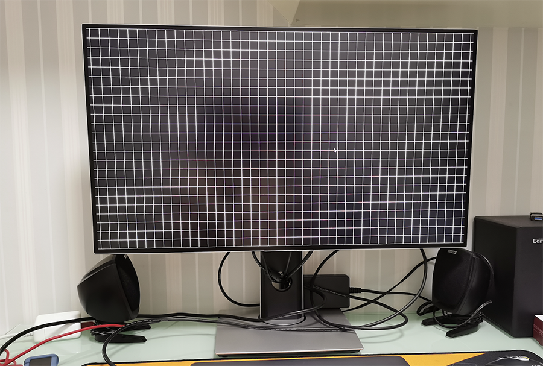
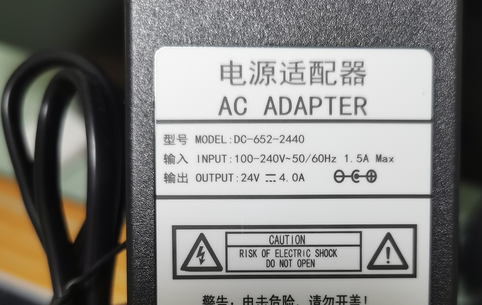
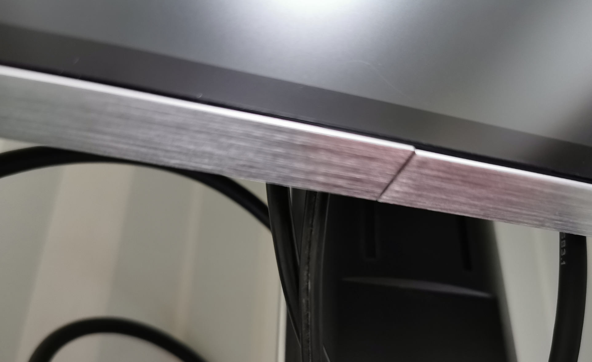
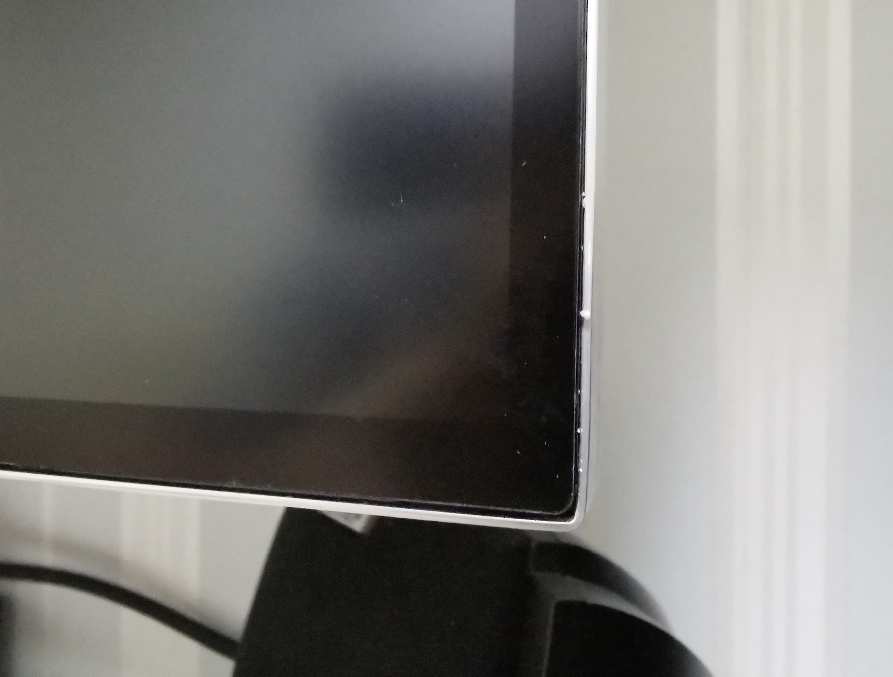
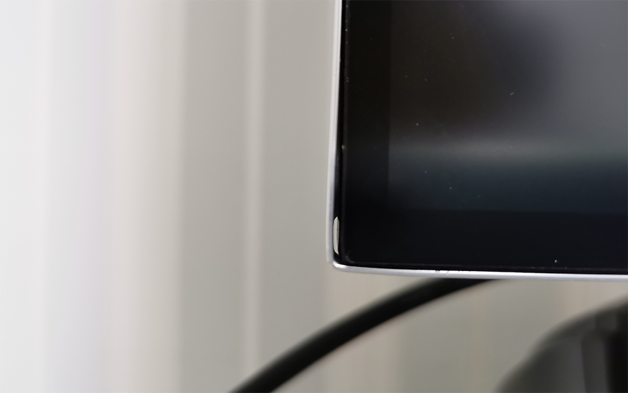
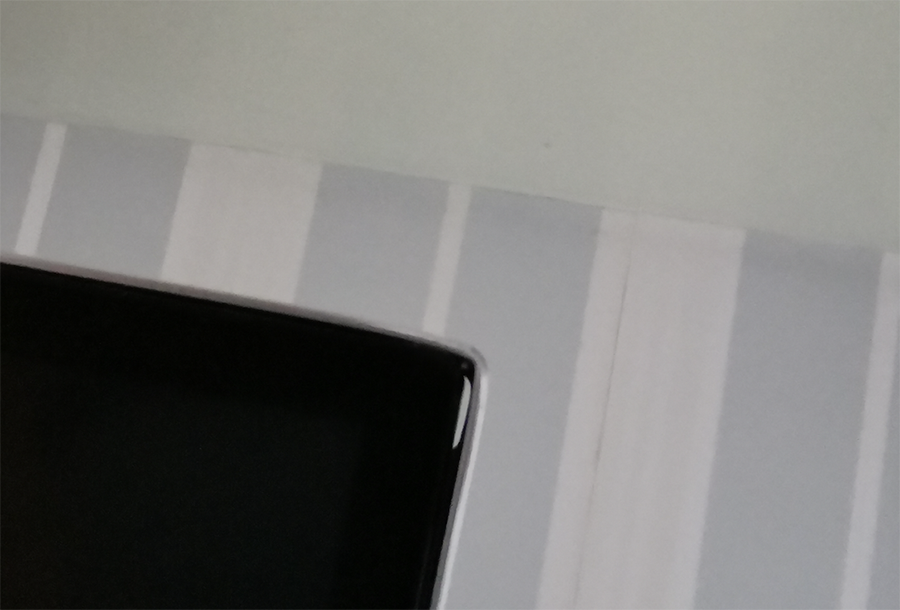
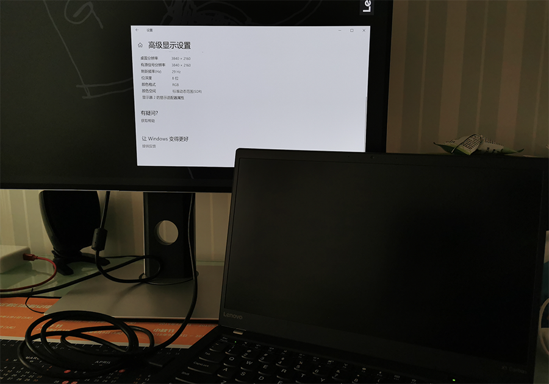
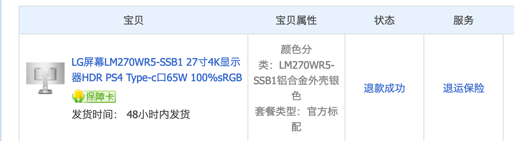
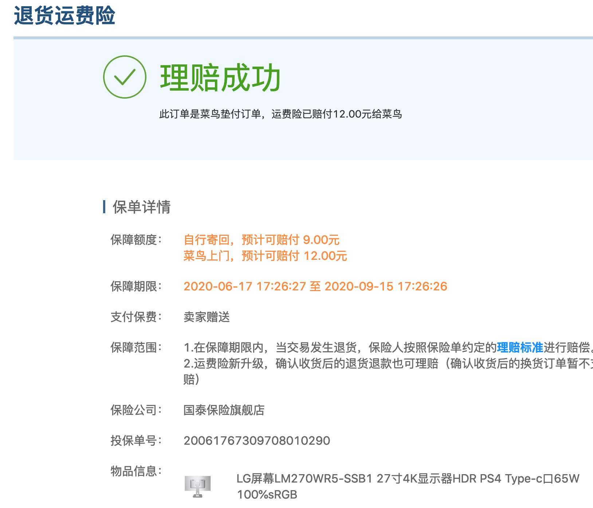

购物付款的感觉真的是很好，特别是大额现金的时候。
今天下单了 DELL UltraSharp 2720QM，关于U2720QM的具体情况等到货再说，先谈谈前面入过的坑。
2013年生日的时候，购买了一台DELL UltraSharp 2414H 显示器，使用至今7年时间，相当的稳，不管是对比度，色域，亮度，都非常的好。很难想象在2020年疫情期间，在家办公了快4个月时间，如果没有它，肯定相当的难熬。
但缺点是都2020年了，还没能上2K，1080有点跟不上潮流，也就有了换4K的念头。一直以来动手能力超强，也是在张大妈上看到网友自购LG LM270WR5-SSB1 面板、驱动板、在开个模具一台高性能的27寸4K显示器就可以上线使用了，成本1500-1800元。
购买了一台DIY27寸4K显示器
年纪大了，精力不足，也就在淘宝上，找了个销量还不错的DIY显示器的商家，购买了一台27寸4K显示器。 这价格SAMSUNG、PHILIPS、LG、ViewSonic、AOC，都有27寸入门级4K显示器。更别提低于1500以下的 创维、凡硕、松人等…
为什么选择27寸 4K DIY 显示器
是觉得要上32寸，就不如用电视了…DIY是27寸4K入门的价格，但面板是LG LM270WR5-SSB1，它的显示各项参数都非常不错，具备P3色域就和MacBookPro很兼容了，至少不会看完显示器，再看电脑色差巨大。还一个最关键的就是带 Type-C 支持65W充电，至少桌面上减少了两根线，分别是一根笔记本电源线和一根USB数据上行线。

收到DIY27寸4K显示器时拆箱
购买DIY27寸4K显示器翻车现场
买家发货比较积极，顺丰2天就到货了，搬回家第一时间开机使用检测屏幕，无暗点、坏点也没有亮点，各种屏幕测试软件测试过之后，完美屏。但在使用过程中还是会发现一些细节的问题。金牛座的我有着处女座的挑剔。

各种软件测试
购买DIY27寸显示器翻车的几个问题点
静电不可避免
淘宝购买的DIY27寸4K显示器，商家定制一体式铝合金后壳，手感肯定是没花说，虽然不是快充，安装升降旋转底座是需要手动安装4颗螺丝，是可以接受的。但商家配备的是24V-4.0A的电源适配器。这个电源适配器是两项插孔，无法接地，以至于整个显示器后壳+边框（边框也是金属）是带电的。手摸上去是麻的，24V-4.0A全淘宝都是两项插口的，如果想买三项的只能购买大于这个瓦数的。

DIY27寸4K显示器电源适配器 24V-4.0A=86W，Type-C 还能提供 65W 供电，没设备无法测试边框工艺还欠缺火候
既然有了一体成型的铝合金显示器后壳，那么将LG LM270WR5-SSB1面板安装上去，就一定需要定制边框，商家定制的边框，工艺实在难以接受。除边框一圈又明显接头以外，显示器4个90度直角，有2个处理还不错，但另外2个就太马虎，还有空隙，可以穿过5根牙签的缝隙。难道是快递运输造成的？还是我是个案？ 但金属边框也够硬 ，个人感觉是不容易变形的。

DIY显示器目前的铝合金边框还无法做到无缝对接，但这样翘起实在是很难看

DIY27寸4K显示器右下角，工艺还不错，如果4个角都这样，我会点赞

再来看下DIY27寸4K显示器的左下角

DIY27寸4K显示器的右上角，哎…头疼4K显示器驱动板
驱动板都是公板，商家拿来就用，并不会植入LOGO等界面，所以开机画面就是蓝屏的，感觉很LOW。驱动板接口 HDMI1、DP1、Type-C1、USB2、电源输入1、音频输出1、插口位置在显示器与显示器支架之间的中间。插拔就是超级不顺手的。配套驱动板的是一套按键，手感一般，但是按键功能的排列顺序，有点烧脑，按键并没有标注功能说明。
功能-上-下-退出-确认-左-关机，经常不小心就按关了
配套数据线Type-C\DP\HDMI
Typec确实方便，一根线解决充电、视频、音频、数据传输等所有问题，但同样带来的是导电。上面说了显示器静电，这静电会通过Type-C传到MacBookPro，要知道MacBookPro静电，通过使用三项电源线可以解决，但现在是显示器供电，无解，除非把显示器电源换了，但是匹配的不多。DP线因为不玩游戏机还没使用…
HDMI线，虽然是2.0的，但接入Thinkpad X1 Carbon 2017 5th 的 HDMI口（未用type-c拓展坞）是无法实现4K60hz刷新率的，只能继续30hz。

DIY27寸4K 显示器 HDMI 2.0线 无法上4K60hz ,暂只有Type-C可以4k60hz
感悟…
总之给你带来的就是一种超级的不确定性，无奈一周后坚决退货。低价确实容易吸引客户，却也容易使客户形成“低价没好货”的印象。长期用低价手段或许短期内收益会比较明显，但从长远角度来看，却侵蚀了自己长期的利润，以致销量增加利润最终都下降。

淘宝的退货流程还是比较满意，极速退款

显示器加外包装9KG，运费60元，运费险只能赔付12元，就当体验费吧……